An app for high school students: point the camera at a formula handwritten in your notebook and the molecule appears in 3D, ready to rotate and explore.
Scanning, 3D molecule, element card, building table, trends and dictionary
The problem
I always liked chemistry, but I found it hard: a formula like H₂O is an abstraction, and you have to imagine in 3D something you only see written in 2D. I wanted to build the tool that would have helped me.
Every fact can be seen, not just read
Tap a card and the molecule changes to show that concept.
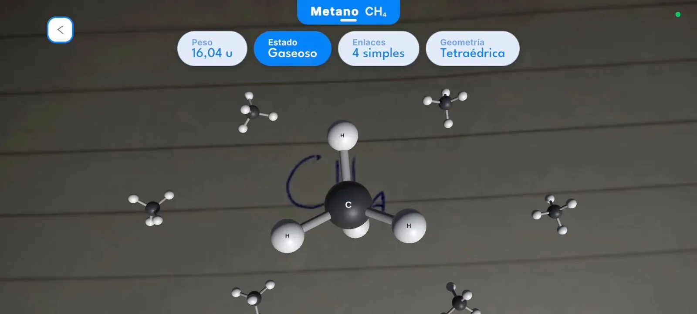
State: more molecules appear, floating like in a gas
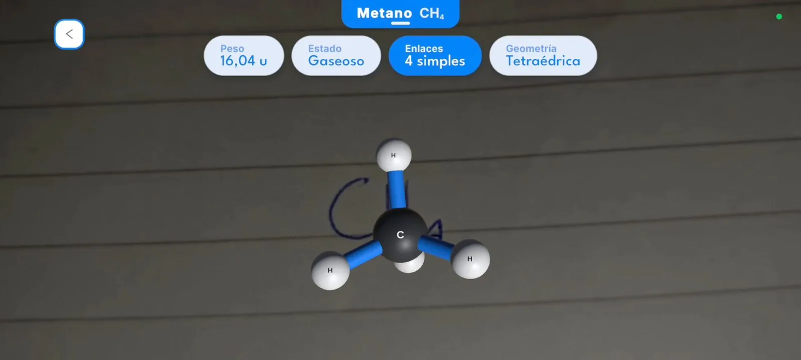
Bonds: the bonds are highlighted (4 single bonds in methane)
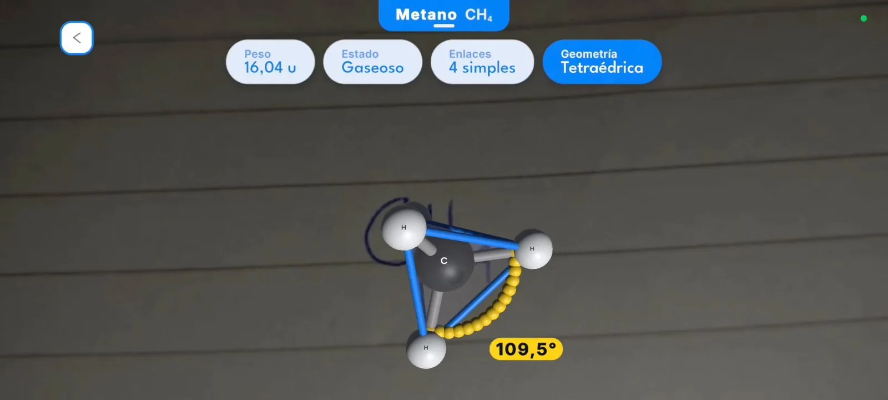
Geometry: the angle between the bonds is drawn (109.5° in methane)
From a prototype to any molecule
The first version used a model trained in Teachable Machine, which only recognized the molecules I had trained it with. To make it work with any formula, I connected the app to the internet: Gemini reads the handwriting and PubChem returns the molecule's real data. That first version still lives inside the app: without internet, it recognizes the 3 molecules I trained it with.
Design decisions
The camera fills the whole screen so the notebook takes center stage, and the controls sit at the bottom, within thumb reach. The data isn't just text: each card triggers a 3D visualization. Everything is connected (molecule, atom, periodic table) so you can explore without getting lost, and the text size is adjustable.
At first the app was vertical for scanning and horizontal for exploring the molecule. Turning the phone back and forth was awkward, so I made the whole app horizontal: it works the same way from start to finish.
From wireframe to app
I went straight to wireframes. The first version was for sorting out ideas; then I built each screen in grayscale before taking it to Unity.
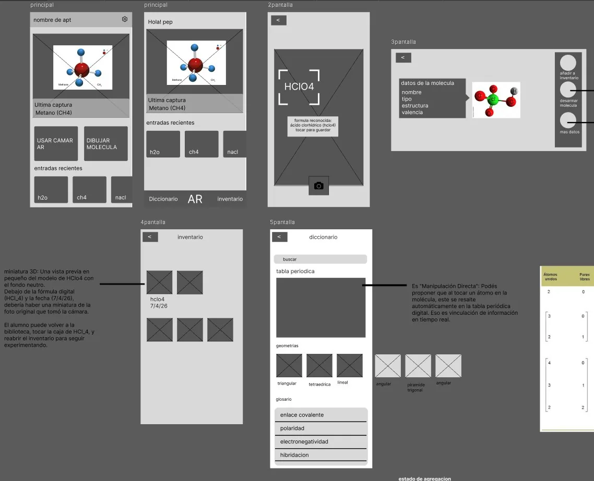
Version 1: for sorting out ideas, before worrying about sizes
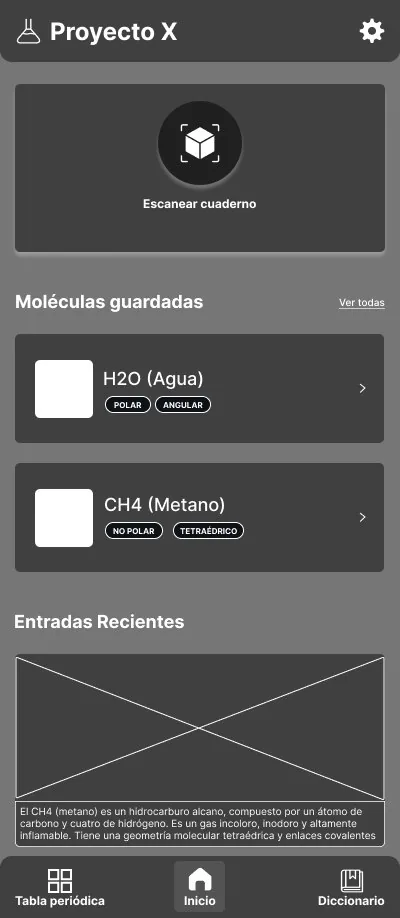
Home
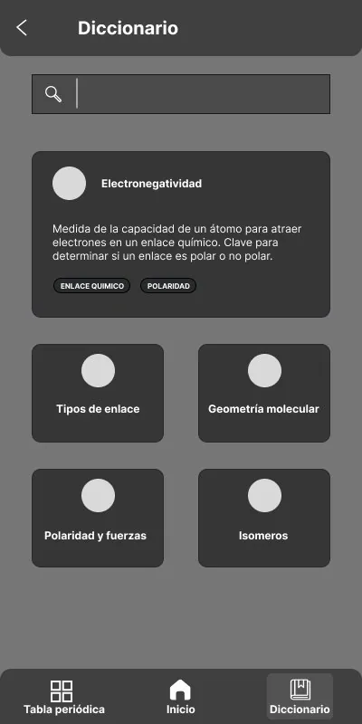
Dictionary
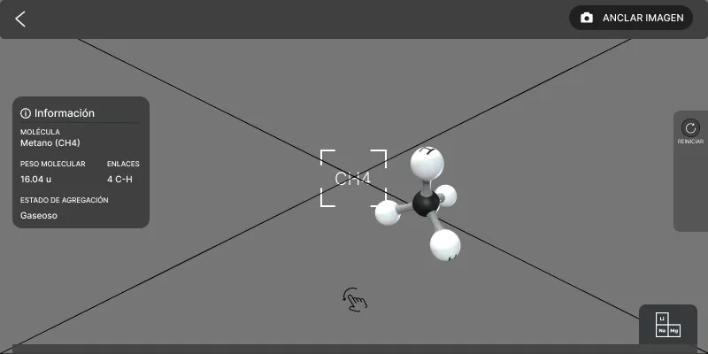
The molecule over the camera
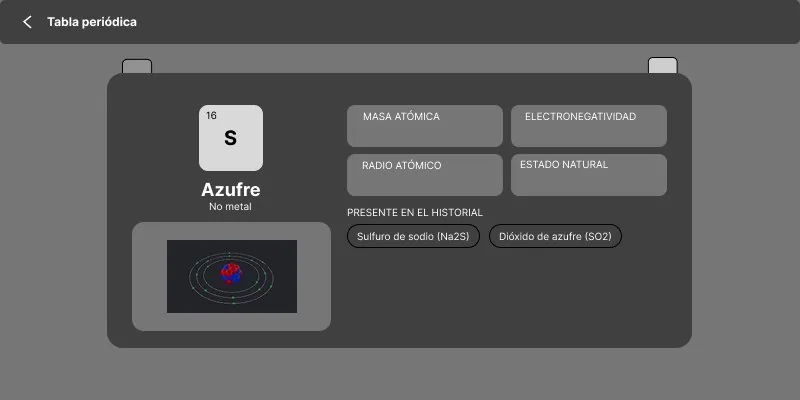
Element card
Previous version
Vertical for scanning and horizontal for exploring the molecule. Later I made it all horizontal.
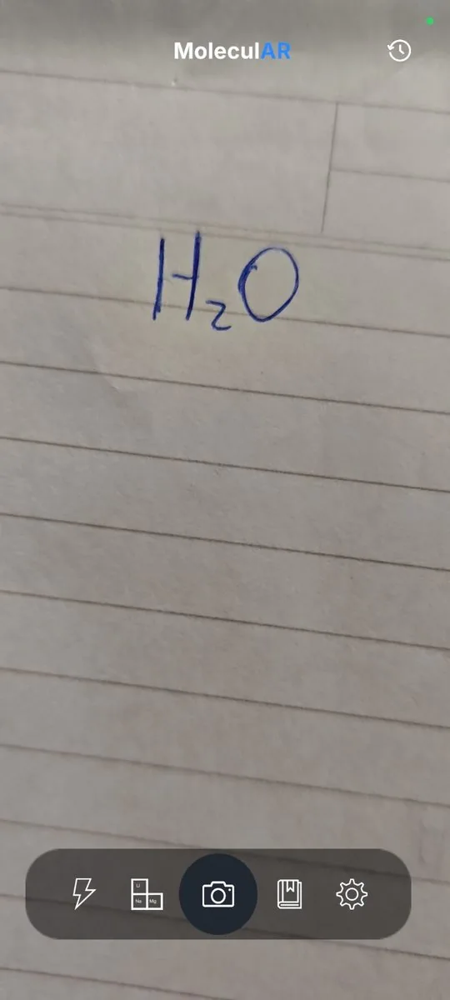
Vertical scanning
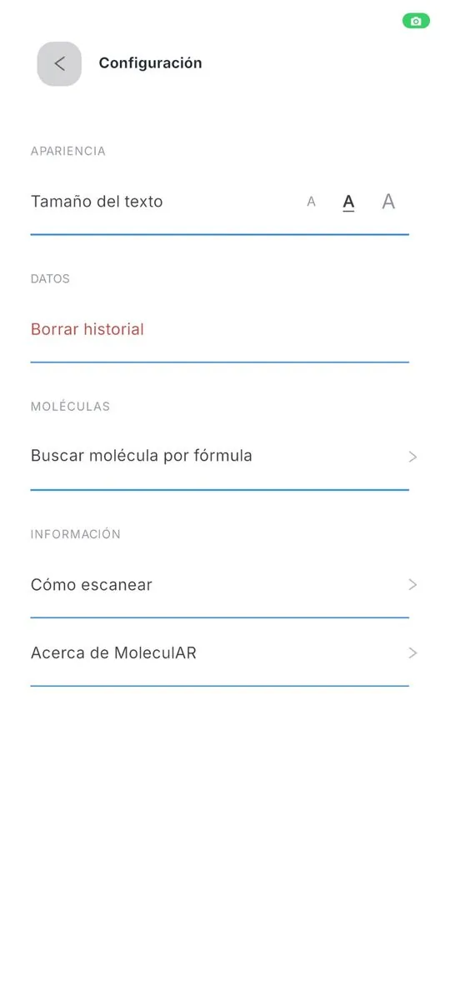
Settings
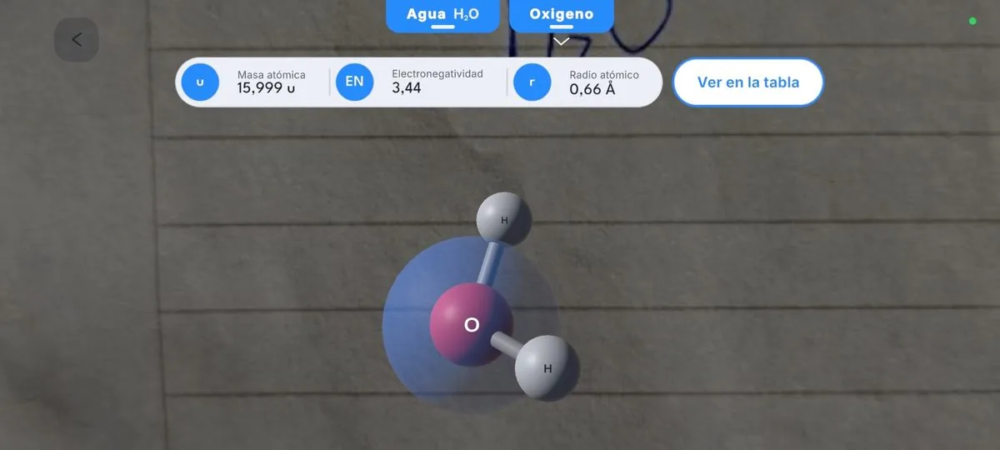
The molecule, already horizontal
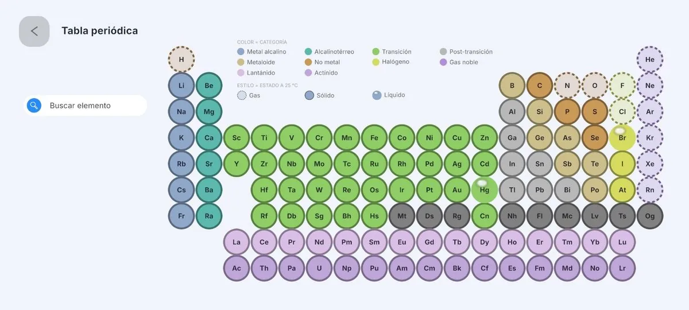
Periodic table
Explore and study
From atom to table: tap an atom in the molecule to reach its card and its place in the periodic table.
Building table: drag elements from the table to build your own molecules; the app shows the structure, the 3D model, the name and the bond type.
Trends: the table is colored by electronegativity, radius or mass.
Dictionary: as a concept map or as a searchable list.
History: every scanned molecule is saved with the photo of the notebook.
Accessibility: adjustable text size.
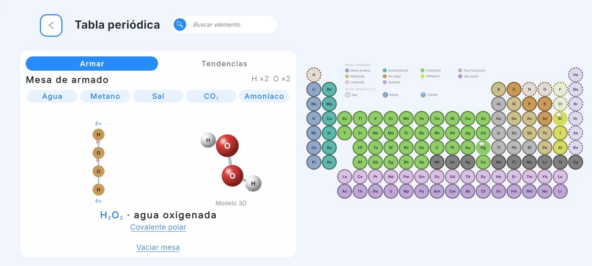
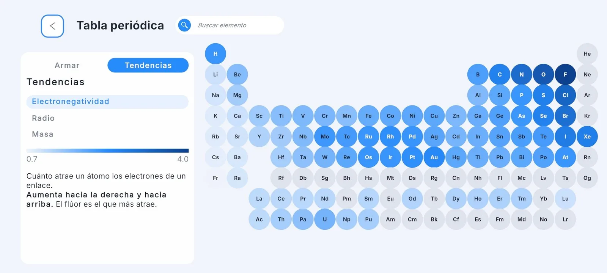
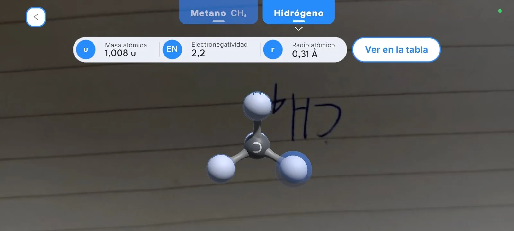
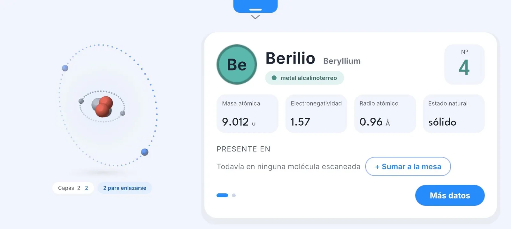
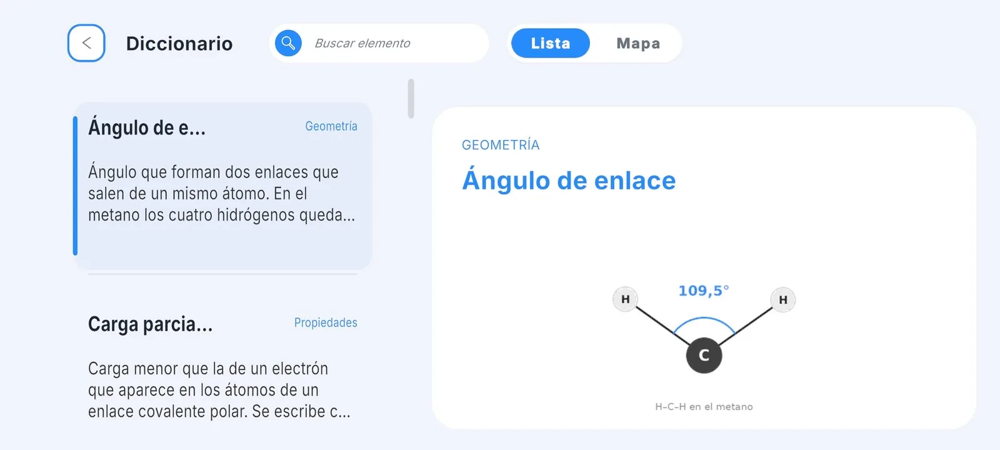
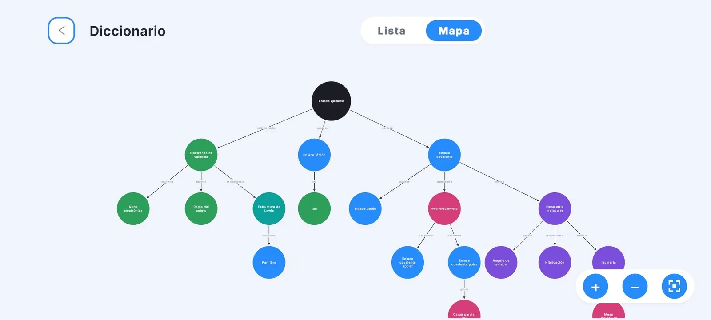
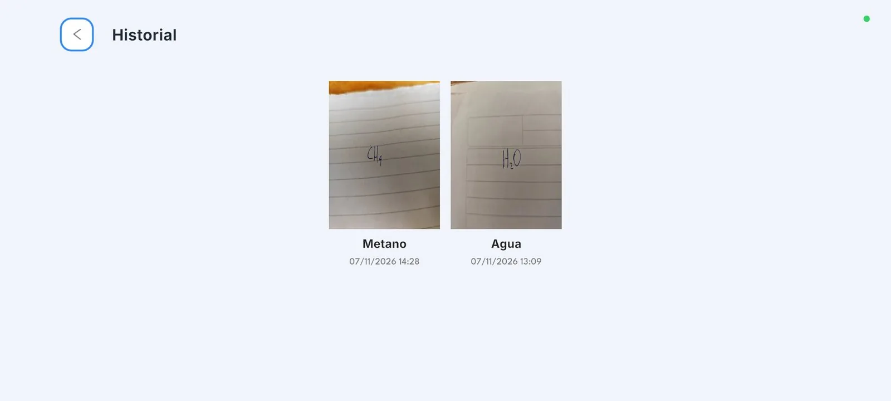
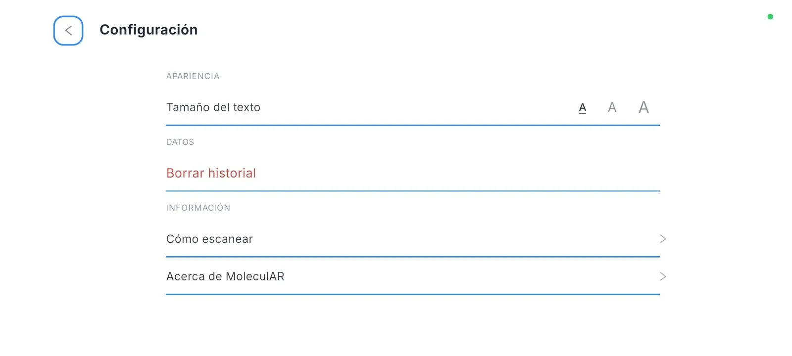
User testing
I tested it with friends and family while developing it. Two of them know chemistry and helped me sketch the first concept map for the dictionary and decide which data every molecule had to show. Based on their feedback I switched picometers (pm) to ångströms (Å) and redesigned elements that looked like buttons but weren't.
What I learned
It was my first time programming AR from scratch, too ambitious for a thesis with little time, but the app ended up working, and along the way I learned to iterate: test, see what fails and change approach.
What's next
I really enjoyed making it, and I also learned that an AR project this size is a lot for one person. What I liked most was organizing the information and thinking through each screen, and that's where I want to keep going: designing apps and websites.